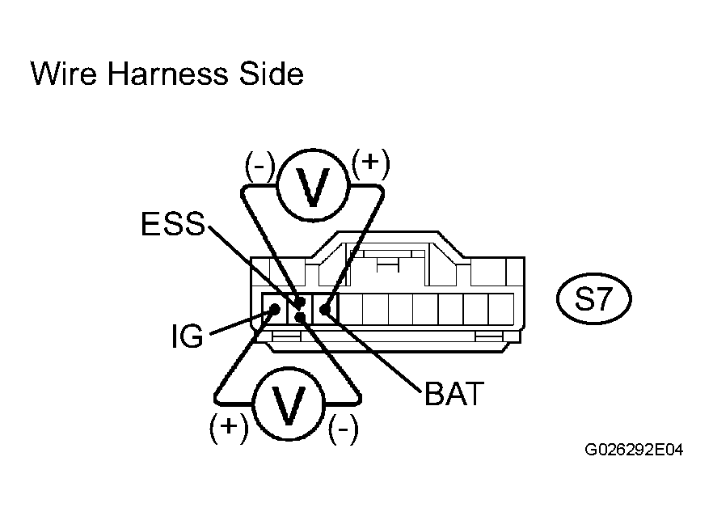

Inspection Procedure
HINT:
- When U0121/94, U0123/62, U0124/95 or U0126/63 is output along with C1210/36 or C1336/98, inspect and repair the trouble areas indicated by U0123/62, U0124/95 or U0126/63 first.
- When the speed sensor or the yaw rate sensor has a problem, DTCs for the steering angle sensor may be output even when the steering angle sensor is normal. When DTCs for the speed sensor or yaw rate sensor are output with other DTCs for the steering angle sensor, inspect and repair the speed sensor and yaw rate sensor first. Then inspect and repair the steering angle sensor.
- CHECK WIRE HARNESS (STEERING ANGLE SENSOR - BATTERY)
- Disconnect the S7 sensor connector.
- Measure the voltage of the wire harness side connector.
Standard voltage
TESTER CONNECTION SPECIFIED CONDITIONTester Connection Switch Condition Specified Condition S7-1 (IG) - S7-2 (ESS) Ignition switch ON 10 to 14 V S7-3 (BAT) - S7-2 (ESS) Always
NG: REPAIR OR REPLACE HARNESS AND CONNECTOR

Courtesy of © TOYOTA, LICENSE AGREEMENT TMS1002OK: REPLACE STEERING ANGLE SENSOR